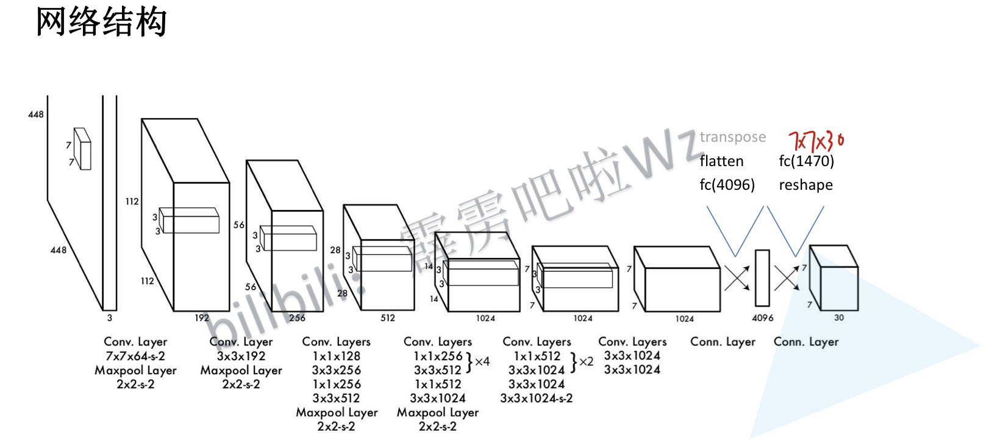
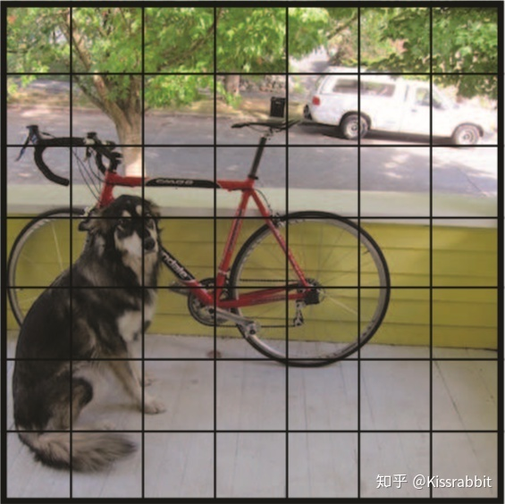
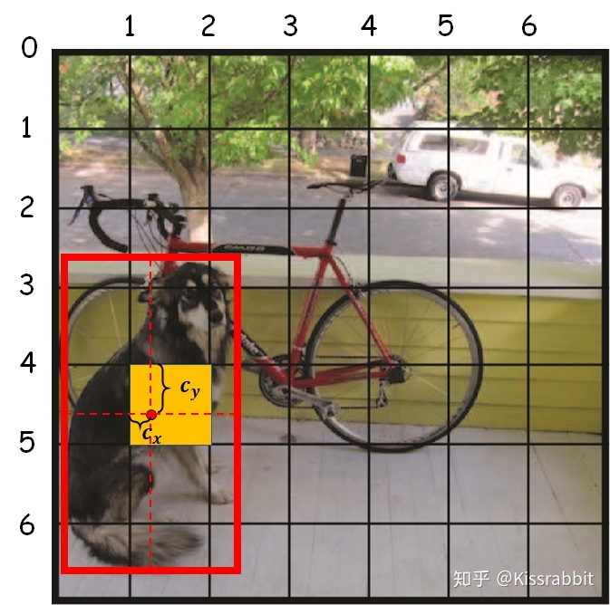
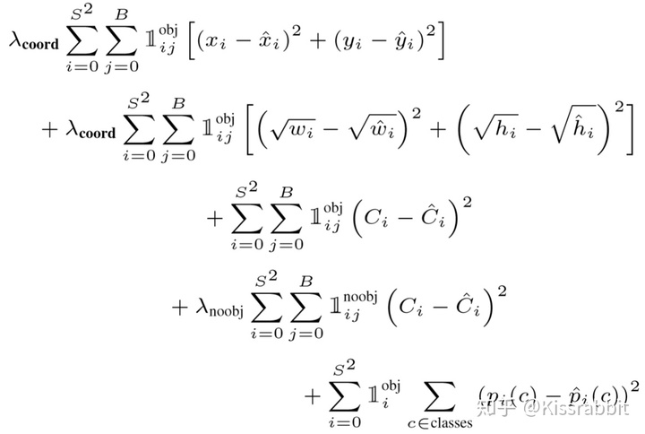
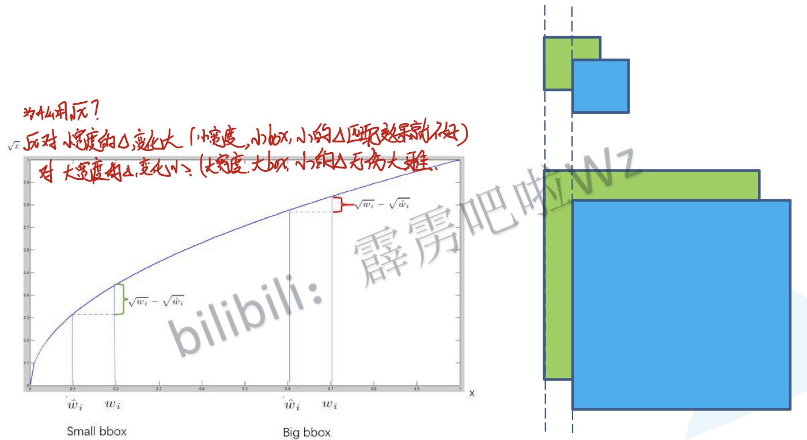
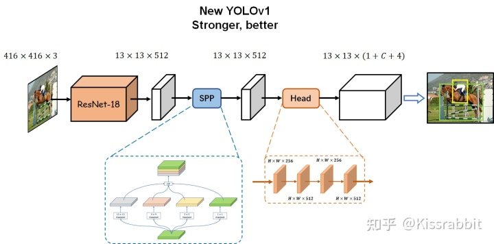
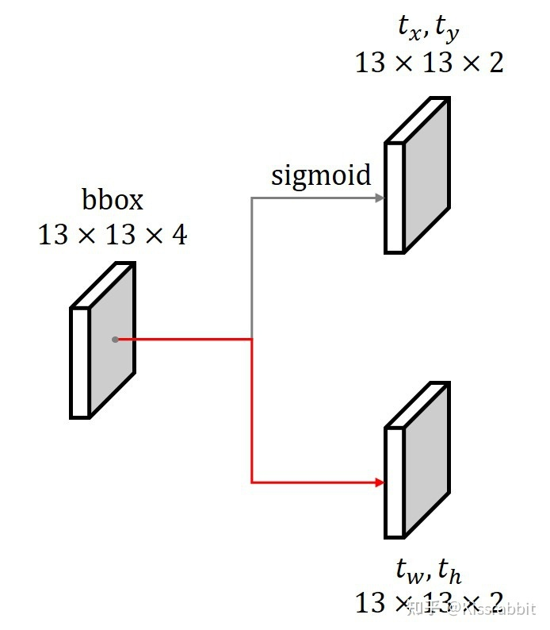

Yolo-v1:
Free-anchor v1：
每个网格处，有B个bbox，网络直接每个bbox输出位置信息的四个值。经过反解生成锚框(bushi)。去算iou，取最大的iou对应的bbox，进行反向传播位置参数。
Free-anchor v2：
每个网格为中心，预测anchor的(x,y,h,w),而不是预测anchor的偏执。
anchor-free会导致多个物体中心都落在同一个cell里，导致预测不好。
逐网格找东西：

将1张图片7等分，子图经过网络都会下采样成一个像素点。通过这个像素点来判断是否是物体的中心坐标，并确定其类别。
YOLO- v1有三部分输出：
- objectness：框的置信度，表征该网络是否有物体。
- class：类别预测
- bbox：边界框偏移预测
输出值解析：
网络输出(7,7,30)的特征图。(7，7)是原图(448，448)经过64倍采样得到的。
通道数30:
(7，7)的图像上每个像素点预测两个bounding box，每个bbox包含5个输出参数：
- 置信度，锚框的四个位置参数。两个锚框->一共10个框。
- 20个类别 -> num_class
最后网络输出的预测参数总量:
$$
SS(5*B + C)
$$
$$
S = \frac{输出图片尺寸}{网络的下采样倍数}
$$
置信度：
与RPN相同，都是预测是否是正负样本。但是又有不同。YOLO认为框的置信度也应该有表征对bbox预测的定量评价的能力。
- 无物体处，学习标签为0.
- 有物体处：
- 对于正样本(grid_x,grid_y)处，YOLO输出B个bbox
- 计算这B个bbox与真实bbox的交并比，得到B个iou。
- 选择其中iou最大的值作为置信度C的学习目标。
- 也只让这个iou最大的bbox的位置信息去反向传播，其他B-1个框忽略。
偏移值：
给定一个真实的bbox坐标(Xmin,Ymin,Xmax,Ymax)，计算中心点及w,h:
$$
w = x_{max} - x_{min},
h = y_{max} - y_{min},
\\displaylines
c_x = \frac{x_{min} + x_{max}}{2},
c_y = \frac{y_{min} + y_{max}}{2}
$$
获得中心点后，就可以得到落在网格的什么位置：
$$
grid_x = int(\frac{c_x}{stride}),
grad_y = int(\frac{c_y}{stride})
$$
中心点误差就出来了：
$$
l_x = c_x - grid_x,
l_y = c_y - grid_y
$$

w,h必须进行归一化操作：
$$
w = \frac{w}{w_{image}},
h = \frac{h}{h_{image}}
$$
反解中心点：
$$
c_x = (grid_x + l_x) * stride,
c_y = (grid_y + l_y) * stride,\\displaylines
w_{box} = w * w_{image},
h_{box} = h * h_{image}
$$
正负样本匹配：
若某个物体的中心落在这个网格中，则这个网格就负责预测这个物体。
损失函数：
YOLO系列：class和offset只用正样本更新，只有confidence使用正负样本进行更新。

- 前两行都是均方误差计算位置信息的损失。前面的1指的是正样本才计算位置损失函数与类别损失函数。
- 有物体的地方，我们让网络去学习，逼近他。没有物体的地方，让置信度很低就行。
- 第三行计算预测框与真实框的iou，预测越准，iou越接近1，锚框逐渐逼近真实框。
- 第四行，没有物体的地方，目标conference=0，置信度会逐渐逼近0，正负样本不均衡，所以负样本的权重改为0.5.
- 第五行，分类损失也适用均方误差，不用Softmax，难以理解。

测试：
计算bbox和类别：
$$
\begin{split}
center_x=(grid_x+c_x)×stride,{align}
center_y=(grid_y+c_y)×stride,\
w_{box}=w×w_{image},\
h_{box}=h×h_{image},\
class = max(C_1,C_2….C_{20})
\end{split}
$$
计算每个边框的得分：
边框置信度 * 类别置信度
$$
score = C_{box} * Pr(class)
$$
训练阶段，只有正样本的class预测才会被学习到，而负样本，也就是背景给出的class预测不会被学习。这就会导致在推理的时候，有物体的地方会有可靠的class预测输出，而没有物体的地方的class预测输出约等于瞎预测，毕竟没有被训练。但这个时候，由于objectness的作用就是判断是否有物体，因此，对于前景，objectness的值会很接近1，反之很接近0。那么，即使class瞎预测，但objectness只要给出接近0的值，那么这个地方的score也会很低，从而滤除了背景。
YOLO- v1理解
YOLO的精髓在于把背景和前景的各个类别的学习解耦了。
解耦操作才是YOLO为什么对Focal loss不敏感的原因，因为它用objectness分支把背景和前景的各个类别的学习解耦了。class分支只需要学正样本就好了。
像RetinaNet那样，单独的背景要和其他一大堆前景标签一块battle，把置信度拉到自己头上。**Objectness预测分支才是YOLO的灵魂！**如果没有这个分支，那和SSD、RetinaNet也就没差别了。
改进后的YOLO- v1

- 用resnet-18来作为网络的特征提取层
- SSP使用多尺度融合，对输入的特征图进行不同卷积核的处理，经过maxpooling处理后，在channel维度进行拼接，再经过1*1的卷积层调整通道，输出同尺度的特征图。
- Detection head：进行若干次卷积，1*1与3*3卷积重复进行。
- predict：使用1*1的卷积在特征图上进行预测。flatten会破坏特征图的空间信息。
- objectness：经过sigmoid，输出13*13*1 (B = 1)
- Class:经过Softmax，输出13*13*C
- regression：
- c_x,c_y就是介于(0,1)之间的数，其本身就是有上下界的，而线性输出并没有上下界，这就容易导致在学习的初期，网络可能预测的值非常大，导致bbox分支学习不稳定。经过sigmoid映射为(0,1)。
- 边界框的宽高显然是个非负数，而线性输出不能保证这一点，输出一个负数，是没有意义的。
- 一种解决办法是约束输出为非负，如用ReLU函数，但这种办法就会隐含一个约束条件，这并不利于优化，而且ReLU的0区间无法回传梯度；
- 另一个办法就是使用exp-log方法，具体来说，就是将 w，h 用log函数来处理一下：$t_w=log(w)，t_h = log(h)$。这样，网络的预测值就可以是负值了。对于预测值，通过exp就可以去到真实的w,h.
-

损失函数：
-
objectness损失：使用L2loss
- $$
L_{obj}= 5*\sum_0^{s^2} (C_{ij}^{object} - 1)^2 + 1 * \sum_0^{s^2} (C_{ij}^{noobject} - 1)^2
$$
-
class损失：Cross-entropy
- $$
L_{cls} = \sum_0^{s^2} CE(p^h_{ij},p_{ij})
$$
-
位置信息损失：
-
 - 中心点是二分类，w,h为均方误差。
- 中心点是二分类，w,h为均方误差。
搭建YOLO-v1
- 数据预处理
- 网络搭建：torch搭积木。
- 训练时，如何制作label？ ✅✅✅
- 训练时，如何将三个预测用于计算loss？ ✅✅✅
- 测试时，如何将从txtytwth预测换算出bbox的左上角坐标（x1，y1）和右下角坐标（x2，y2）？ 公式反解。✅✅✅
- 测试时，如何对预测结果进行后处理，以便得到我们所需要的合适的结果？
- 对score进行处理，删去低置信度的。
- 进行nms处理。
制作label：
label的制作
输入：真实框的位置信息和类别
输出：[ 置信度，类别，[中心点，wh偏置]，权重 ]
1
2
3
4
5
6
7
8
9
10
11
12
13
14
15
16
17
18
19
20
21
22
23
24
25
26
27
28
29
30
31
32
33
34
35
36
37
38
39
40
41
42
43
44
45
46
47
48
49
50
51
52
53
54
55
56
57
58
59
60
61
62
63
64
65
66
67
68
69
70
71
72
73
74
|
def gt_creator(input_size, stride, label_lists=[]):
"""
label_lists为真实框的标签值->[class,x,y,x,y]->(Batch,num_label,5)
stride为下采样倍数
input_size为框的
输出：(Batch,num_label,7)
"""
# 必要的参数
batch_size = len(label_lists)
# 拿到图像的宽高，用于计算权重
w = input_size[0]
h = input_size[1]
# 得到真实框的中心点
ws = w // stride
hs = h // stride
s = stride
# 生成标签 置信度，类别，锚框位置信息，回归权重
gt_tensor = np.zeros([batch_size, hs, ws, 1+1+4+1])
# 制作训练标签
for batch_index in range(batch_size):
for gt_label in label_lists[batch_index]:
# 拿到类别
gt_class = int(gt_label[-1])
# 根据真实框来得到标签，gt_label里包含一些锚框的右上左下，通过这些来计算中间点和宽高。
result = generate_txtytwth(gt_label, w, h, s)
# 图片里有label
if result:
# 拿到中心点，偏差和权重
grid_x, grid_y, tx, ty, tw, th, weight = result
# 如果中心点在图片内，就加入到gt_tensor中
if grid_x < gt_tensor.shape[2] and grid_y < gt_tensor.shape[1]:
# 置信度
gt_tensor[batch_index, grid_y, grid_x, 0] = 1.0
# 类别
gt_tensor[batch_index, grid_y, grid_x, 1] = gt_class
# 偏差
gt_tensor[batch_index, grid_y, grid_x, 2:6] = np.array([tx, ty, tw, th])
# 权重
gt_tensor[batch_index, grid_y, grid_x, 6] = weight
gt_tensor = gt_tensor.reshape(batch_size, -1, 1+1+4+1)
return torch.from_numpy(gt_tensor).float()
# 根据真实框生成label
def generate_dxdywh(gt_label, w, h, s):
# 拿到左上右下的坐标
xmin, ymin, xmax, ymax = gt_label[:-1]
# 计算中心点和真实框宽高
c_x = (xmax + xmin) / 2 * w
c_y = (ymax + ymin) / 2 * h
box_w = (xmax - xmin) * w
box_h = (ymax - ymin) * h
# 框的宽高必须大于1
if box_w < 1. or box_h < 1.:
# print('A dirty data !!!')
return False
# 拿到中心点的真实值（取整）
c_x_s = c_x / s
c_y_s = c_y / s
grid_x = int(c_x_s)
grid_y = int(c_y_s)
# 计算中心点损失
tx = c_x_s - grid_x
ty = c_y_s - grid_y
# 计算真实框的偏移，取log
tw = np.log(box_w)
th = np.log(box_h)
# 权重计算，框越大，权重越大
weight = 2.0 - (box_w / w) * (box_h / h)
return grid_x, grid_y, tx, ty, tw, th, weight
|
如何计算loss
输入：网络预测结果与真实值
输出：损失值
1
2
3
4
5
6
7
8
9
10
11
12
13
14
15
16
17
18
19
20
21
22
23
24
25
26
27
28
29
30
31
32
33
34
35
36
37
38
39
40
41
42
43
44
45
46
47
48
49
50
51
52
53
54
55
56
57
58
59
60
61
62
|
class MSEWithLogitsLoss(nn.Module):
# 置信度需要不同的loss
def __init__(self, reduction='mean'):
super(MSEWithLogitsLoss, self).__init__()
self.reduction = reduction
# 置信度需要分类型算。
def forward(self, logits, targets):
inputs = torch.clamp(torch.sigmoid(logits), min=1e-4, max=1.0 - 1e-4)
pos_id = (targets==1.0).float()
neg_id = (targets==0.0).float()
pos_loss = pos_id * (inputs - targets)**2
neg_loss = neg_id * (inputs)**2
loss = 5.0*pos_loss + 1.0*neg_loss
if self.reduction == 'mean':
batch_size = logits.size(0)
loss = torch.sum(loss) / batch_size
return loss
else:
return loss
def loss(pred_conf, pred_cls, pred_txtytwth, label):
# 损失函数
conf_loss_function = MSEWithLogitsLoss(reduction='mean')
cls_loss_function = nn.CrossEntropyLoss(reduction='none')
txty_loss_function = nn.BCEWithLogitsLoss(reduction='none')
twth_loss_function = nn.MSELoss(reduction='none')
# 拿到网络输出的预测值
pred_conf = pred_conf[:, :, 0]
# torch偏好的分类轴在第二维度
pred_cls = pred_cls.permute(0, 2, 1)
pred_txty = pred_txtytwth[:, :, :2]
pred_twth = pred_txtytwth[:, :, 2:]
# 拿到标签的对应值
gt_obj = label[:, :, 0]
gt_cls = label[:, :, 1].long()
gt_txty = label[:, :, 2:4]
gt_twth = label[:, :, 4:6]
# 拿到权重
gt_box_scale_weight = label[:, :, 6]
batch_size = pred_conf.size(0)
# 置信度损失
conf_loss = conf_loss_function(pred_conf, gt_obj)
# 类别损失，只要正样本的损失
cls_loss = torch.sum(cls_loss_function(pred_cls, gt_cls) * gt_obj) / batch_size
# 边界框的位置损失，只要正样本损失
txty_loss = torch.sum(torch.sum(txty_loss_function(pred_txty, gt_txty), dim=-1) * gt_box_scale_weight * gt_obj) / batch_size
twth_loss = torch.sum(torch.sum(twth_loss_function(pred_twth, gt_twth), dim=-1) * gt_box_scale_weight * gt_obj) / batch_size
bbox_loss = txty_loss + twth_loss
# 总的损失
total_loss = conf_loss + cls_loss + bbox_loss
return conf_loss, cls_loss, bbox_loss, total_loss
|
预测时，如何计算框
预测时，网络输出：置信度，物体的中心点，锚框的偏置，中心点的类别
需要通过中心点和wh偏置计算出锚框的左上右下坐标。

1
2
3
4
5
6
7
8
9
10
11
12
13
14
15
16
17
18
19
20
21
22
23
24
25
26
27
28
29
30
31
32
|
def create_grid(self, input_size):
#计算所有的中心点，同上
# 输入图像的宽和高
w, h = input_size, input_size
# 特征图的宽和高
ws, hs = w // self.stride, h // self.stride
# 使用torch.meshgrid函数来获得矩阵G的x坐标和y坐标
grid_y, grid_x = torch.meshgrid([torch.arange(hs), torch.arange(ws)])
# 将xy两部分坐标拼在一起，得到矩阵G
grid_xy = torch.stack([grid_x, grid_y], dim=-1).float()
# 最终G矩阵的维度是[1,HxW,2]
grid_xy = grid_xy.view(1, hs*ws, 2).to(self.device)
return grid_xy
def decode_boxes(self, pred):
"""
input box : [tx, ty, tw, th]
output box : [xmin, ymin, xmax, ymax]
"""
output = torch.zeros_like(pred)
# 获取bbox的中心点坐标和宽高
pred[:, :, :2] = (torch.sigmoid(pred[:, :, :2]) + self.grid_cell) * self.stride
pred[:, :, 2:] = torch.exp(pred[:, :, 2:])
# 由中心点坐标和宽高获得左上角与右下角的坐标
output[:, :, 0] = pred[:, :, 0] - pred[:, :, 2] / 2
output[:, :, 1] = pred[:, :, 1] - pred[:, :, 3] / 2
output[:, :, 2] = pred[:, :, 0] + pred[:, :, 2] / 2
output[:, :, 3] = pred[:, :, 1] + pred[:, :, 3] / 2
return output
|
预测时，需要做什么处理
还需要对预测结果进行一次后处理，后处理的主要作用是：
- 滤掉那些得分很低的边界框。
- 滤掉那些针对同一目标的冗余检测，即非极大值抑制（NMS）处理。